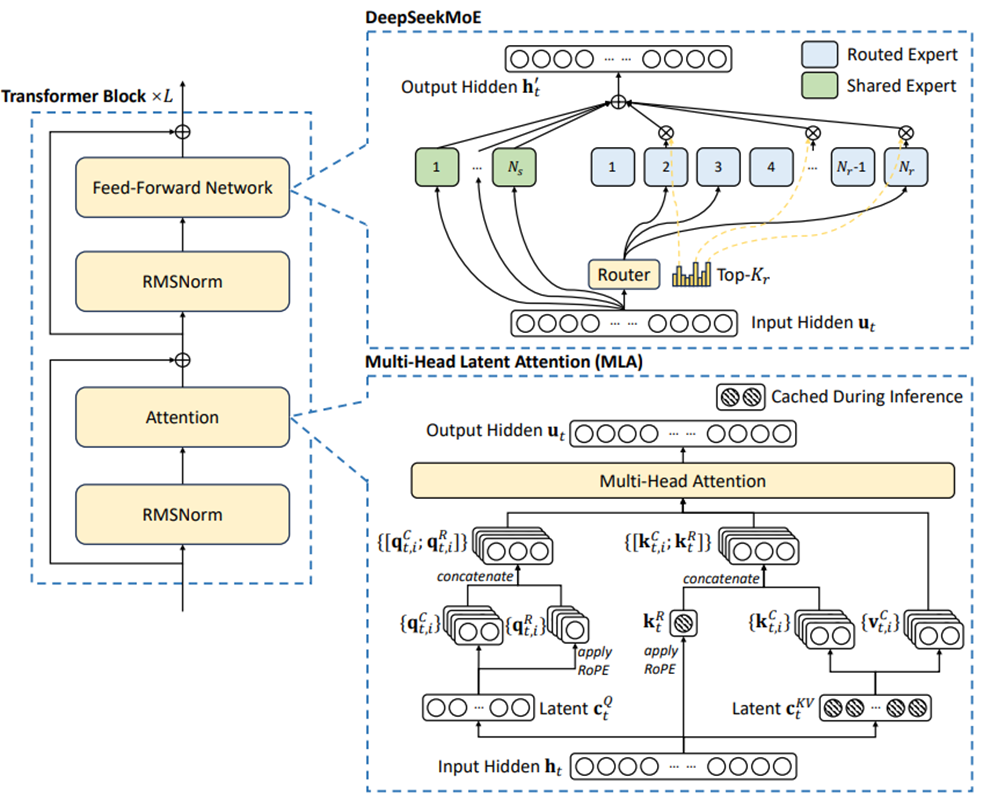
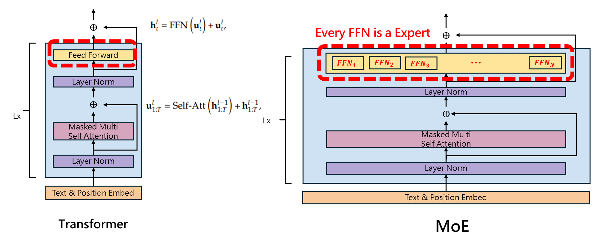
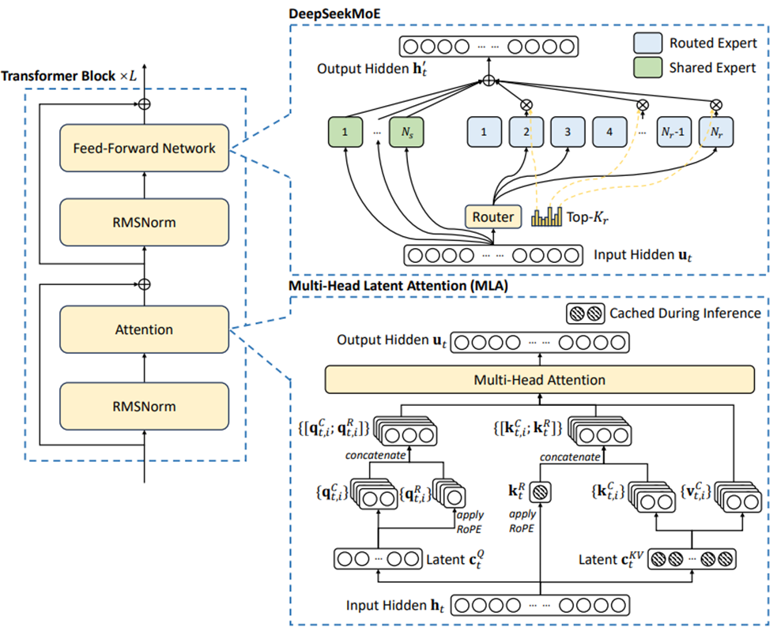
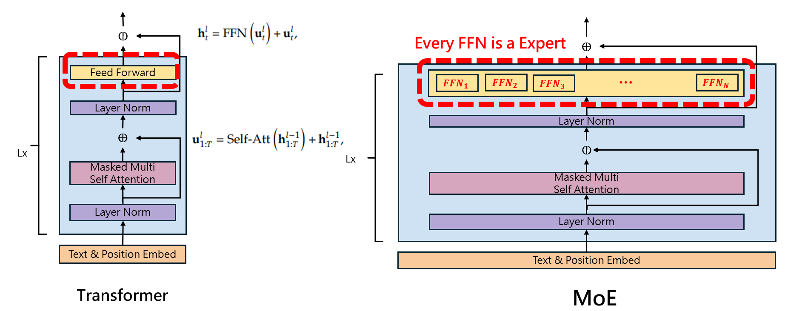

本篇解讀會搭配程式碼一起看，這樣更直觀也更好理解
Mixture-of-Experts (MoE) Architecture
DeepSeek改良了混合專家架構，每個input都只會觸發最懂這個領域知識的專家，所以每次輸入所有參數不需要都算過一次(不會全部專家都被活化)，這樣可以大幅降低運算成本和記憶體使用量。 
Expert
每個 Feed Forward Netword 就是一個 Expert 
本篇解讀會搭配程式碼一起看，這樣更直觀也更好理解
DeepSeek改良了混合專家架構，每個input都只會觸發最懂這個領域知識的專家，所以每次輸入所有參數不需要都算過一次(不會全部專家都被活化)，這樣可以大幅降低運算成本和記憶體使用量。 
每個 Feed Forward Netword 就是一個 Expert 